12. IBM DB2 Express-C 10.5
سنقوم الآن بمعالجة عملية النقل إلى DB2 لما تم تنفيذه مع MySQL. يستخدم كلا نظامي إدارة قواعد البيانات بالفعل نفس الاستراتيجية لتوليد المفاتيح الأساسية.
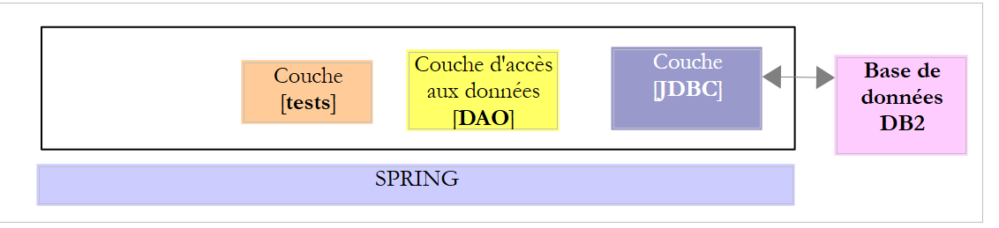 |
12.1. إعداد بيئة العمل
12.1.1. بيئة Eclipse
سنعمل باستخدام بيئة Eclipse التالية:
 |
يمكن العثور على مشاريع DB2 المذكورة أعلاه في المجلد [<examples>/spring-database-config\db2\eclipse].
ملاحظة: اضغط على [Alt-F5] لإعادة إنشاء جميع مشاريع Maven.
12.1.2. إنشاء قواعد البيانات
كما فعلنا مع Oracle، سنحتاج إلى تثبيت برنامج تشغيل DB2 JDBC في مستودع Maven المحلي.
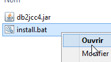 |
يحتوي ملف [install.bat] على الكود التالي:
"%M2_HOME%\bin\mvn.bat" install:install-file -Dfile=db2jcc4.jar -Dpackaging=jar -DgroupId=com.ibm.jdbc -DartifactId=db2jcc4 -Dversion=1.0
حيث [%M2-HOME%] هو دليل تثبيت Maven (انظر القسم 23.2). بعد هذا التثبيت، يمكن الإشارة إلى برنامج تشغيل DB2 JDBC في ملفات [pom.xml] باستخدام التبعية التالية:
<dependency>
<groupId>com.ibm.jdbc</groupId>
<artifactId>db2jcc4</artifactId>
<version>1.0</version>
</dependency>
في بقية هذا الدليل، تتم الاتصالات بقاعدة بيانات DB2 باستخدام بيانات الاعتماد [db2admin / db2admin]. قم بتشغيل DB2 وعميله [Db2Manager] (انظر القسم 23.8).
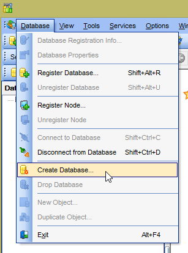 |  |
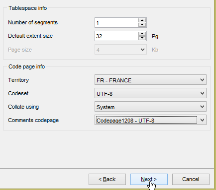 | 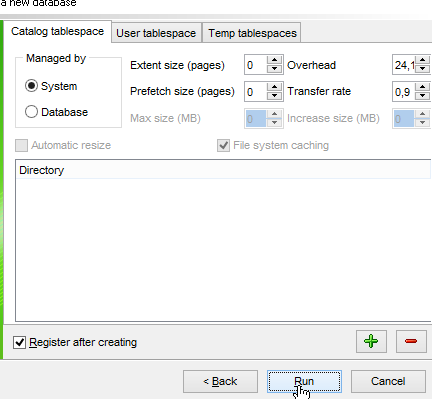 |
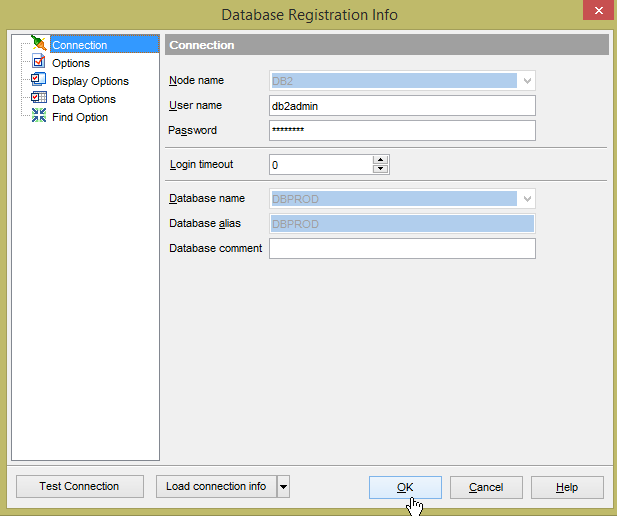 | 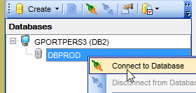 |
 |
قاعدة البيانات [DBPROD] هي قاعدة البيانات [dbproduits] من نظام إدارة قواعد البيانات السابق. ومع ذلك، لم يسمح لي [DB2Manager] باستخدام هذا الاسم (ربما لأنه كان طويلاً جدًا بالنسبة له). والآن نقوم بإنشاء الجدول [PRODUITS] باستخدام تكوين التشغيل التالي في Eclipse [generic-create-dbproduits-jpa]:
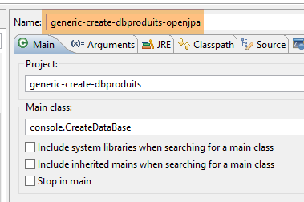 |  |
يؤدي التنفيذ إلى إنشاء الجدول [PRODUITS] في قاعدة البيانات [DBPROD]:
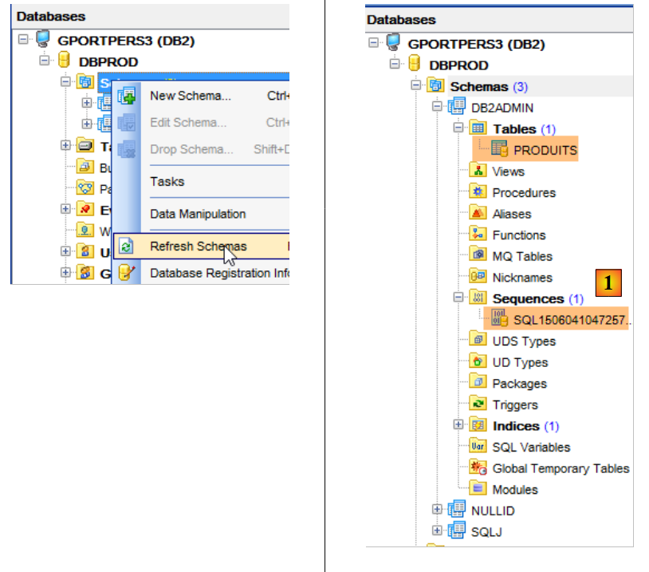 |
- في [1] أعلاه، لم يتم إنشاء التسلسل بواسطة [OpenJpa] بل بواسطة DB2 نفسها، التي تستخدمه داخليًا لإنشاء مفاتيح أساسية؛
الآن، قم بتشغيل التكوينات:
- [spring-jdbc-generic-01.IntroJdbc01]؛
- [spring-jdbc-generic-01.IntroJdbc02]؛
- [spring-jdbc-generic-03.JUnitTestDao1]؛
- [spring-jdbc-generic-03.JUnitTestDao2];
يجب أن تنجح جميعها.
الآن دعونا ننشئ قاعدة البيانات [dbproduitscategories]. ستسمى هنا [DBCAT] للأسباب التي سبق ذكرها فيما يتعلق بقيود طول اسم قاعدة البيانات. كرر الإجراء المستخدم لإنشاء [DBPROD] لـ [DBCAT].
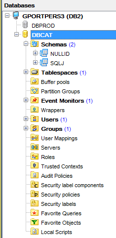 |
سنقوم الآن بإنشاء الجداول لقاعدة البيانات [DBCAT] من Eclipse باستخدام التكوين [generic-create-dbproduitscategories-openjpa]:
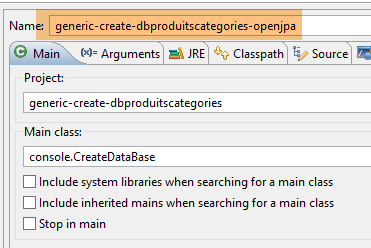 |  |
يؤدي هذا التنفيذ إلى النتيجة التالية:
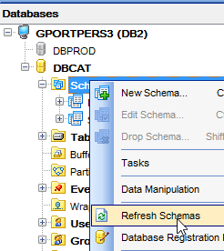 |  |
يجب تعديل عمود [VERSIONING] في الجداول الخمسة بحيث تكون القيمة الافتراضية له هي 1:
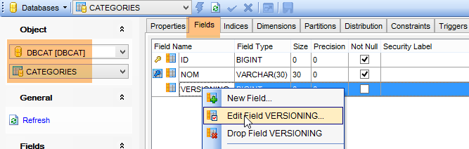 |
 |
يجب تنفيذ هذه الخطوة على جميع الجداول الخمسة.
الآن، قم بتشغيل التكوينات:
- [spring-jdbc-generic-04.JUnitTestDao];
- [spring-jpa-generic-JUnitTestDao-openjpa];
يجب أن ينجح كلاهما.
12.2. تكوين طبقة JDBC
 |  |
يقوم مشروع [db2-config-jdbc] بتكوين طبقة [JDBC] في بنية الاختبار التالية:
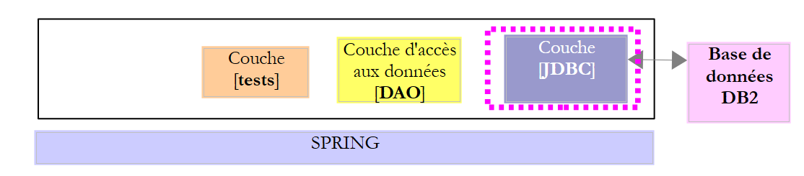 |
يشبه هذا المشروع مشروع التهيئة [mysql-config-jdbc] الخاص بطبقة JDBC لنظام إدارة قواعد البيانات MySQL (انظر القسم 3.3). وسنقتصر هنا على عرض التغييرات فقط:
يستورد ملف [pom.xml] برنامج تشغيل DB2 JDBC:
<project xmlns="http://maven.apache.org/POM/4.0.0" xmlns:xsi="http://www.w3.org/2001/XMLSchema-instance"
xsi:schemaLocation="http://maven.apache.org/POM/4.0.0 http://maven.apache.org/xsd/maven-4.0.0.xsd">
<modelVersion>4.0.0</modelVersion>
<groupId>dvp.spring.database</groupId>
<artifactId>generic-config-jdbc</artifactId>
<version>0.0.1-SNAPSHOT</version>
<name>configuration generic jdbc</name>
<parent>
<groupId>org.springframework.boot</groupId>
<artifactId>spring-boot-starter-parent</artifactId>
<version>1.2.3.RELEASE</version>
</parent>
<dependencies>
<!-- dépendances variables ********************************************** -->
<!-- driver JDBC from SGBD -->
<dependency>
<groupId>com.ibm.jdbc</groupId>
<artifactId>db2jcc4</artifactId>
<version>1.0</version>
</dependency>
<!-- dépendances constantes ********************************************** -->
....
</dependencies>
...
</project>
- الأسطر 18-22: برنامج تشغيل DB2 JDBC؛
التغيير الثاني في فئة [ConfigJdbc]، التي تحدد بيانات اعتماد الوصول إلى قاعدة البيانات:
// paramètres de connexion
public final static String DRIVER_CLASSNAME = "com.ibm.db2.jcc.DB2Driver";
public final static String URL_DBPRODUITS = "jdbc:db2://localhost:50000/dbprod";
public final static String USER_DBPRODUITS = "db2admin";
public final static String PASSWD_DBPRODUITS = "db2admin";
public final static String URL_DBPRODUITSCATEGORIES = "jdbc:db2://localhost:50000/dbcat";
public final static String USER_DBPRODUITSCATEGORIES = "db2admin";
public final static String PASSWD_DBPRODUITSCATEGORIES = "db2admin";
التعديل الثالث الذي يمكن إجراؤه هو على الحد الأقصى لعدد المعلمات التي يمكن أن يدعمها [PreparedStatement]:
// max number of parameters of a [PreparedStatement]
public final static int MAX_PREPAREDSTATEMENT_PARAMETERS = 10000;
يُنشئ الاختبار [JUnitTestPushTheLimits] عبارات SQL لـ 5,000 منتج، مما سيؤدي إلى إنشاء كائنات [PreparedStatement] تحتوي على 5,000 معلمة. وقد دعمت قاعدة بيانات MySQL هذه القيمة. وكذلك فعلت قاعدة بيانات DB2.
التغيير الرابع يتعلق باسم الجدول [ROLES]. هذا الاسم محجوز في نظام إدارة قواعد البيانات DB2. لذلك قمنا بتغيير اسمه إلى [ROLES_]:
public final static String TAB_ROLES = "ROLES_";
public static final String SELECT_ROLES_BYUSERID = "SELECT DISTINCT r.ID as r_ID, r.VERSIONING as r_VERSIONING, r.NAME as r_NAME FROM ROLES_ r, users u, USERS_ROLES ur"
+ " WHERE u.ID=:id AND ur.USER_ID=u.ID AND ur.ROLE_ID=r.ID";
12.3. تكوين طبقة OpenJPA JPA
 | 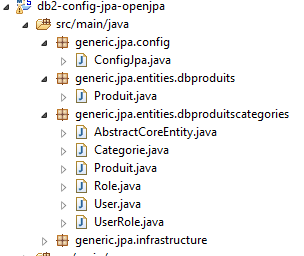 |
يقوم مشروع [db2-config-jpa-openjpa] بتكوين طبقة [JPA] في بنية الاختبار:
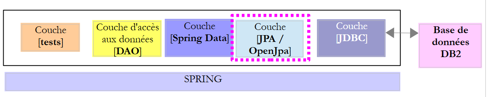 |
هذا المشروع مشابه لمشروع التكوين [mysql-config-jpa-openjpa] الخاص بطبقة OpenJpa JPA لنظام إدارة قواعد البيانات MySQL (انظر القسم 8.3). في الواقع، يستخدم كل من نظامي إدارة قواعد البيانات (DBMS) التعليق التوضيحي [@GeneratedValue(strategy = GenerationType.IDENTITY)] لإنشاء مفاتيح أساسية. هناك تغيير واحد فقط يجب إجراؤه. وهو في تعريف حبة [jpaVendorAdapter] في فئة [ConfigJpa]:
// the provider JPA
@Bean
public JpaVendorAdapter jpaVendorAdapter() {
OpenJpaVendorAdapter openJpaVendorAdapter = new OpenJpaVendorAdapter();
openJpaVendorAdapter.setShowSql(false);
openJpaVendorAdapter.setDatabase(Database.DB2);
openJpaVendorAdapter.setGenerateDdl(true);
return openJpaVendorAdapter;
}
- السطر 6: نخبر تطبيق JPA أنه سيعمل مع قاعدة بيانات DB2. سيقوم تطبيق JPA بعد ذلك بتبني كل من أنواع البيانات الخاصة ولسان SQL الخاص بنظام إدارة قواعد البيانات هذا.
بعد إجراء هذه التغييرات، من المفترض أن ينجح تشغيل تكوين [spring-jpa-generic-JUnitTestDao-openjpa].
 | 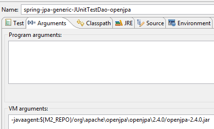 |
12.4. تكوين طبقة Hibernate JPA
 |  |
ملاحظة: اضغط على [Alt-F5] لإعادة إنشاء جميع مشاريع Maven.
مشروع [db2-config-jpa-hibernate] مشابه لمشروع [mysql-config-jpa-hibernate] (القسم 6.3)، مع إدخال التعديلات نفسها التي استُخدمت لتحويل مشروع [mysql-config-jpa-openjpa] إلى مشروع [db2-config-jpa-openjpa] (القسم 12.3).
بمجرد إجراء هذه التغييرات، من المفترض أن ينجح تشغيل تكوين [spring-jpa-generic-JUnitTestDao-hibernate-eclipselink].
12.5. تكوين طبقة EclipseLink JPA
 |  |
ملاحظة: اضغط على [Alt-F5] لإعادة إنشاء جميع مشاريع Maven.
مشروع [db2-config-jpa-eclipselink] مشابه لمشروع [mysql-config-jpa-eclipselink] (القسم 7.3) مع نفس التعديلات التي استُخدمت لنقل مشروع [mysql-config-jpa-openjpa] إلى مشروع [db2-config-jpa-openjpa] (القسم 12.3).
مع تطبيق هذه التعديلات، من المفترض أن ينجح تنفيذ تكوين [spring-jpa-generic-JUnitTestDao-hibernate-eclipselink].